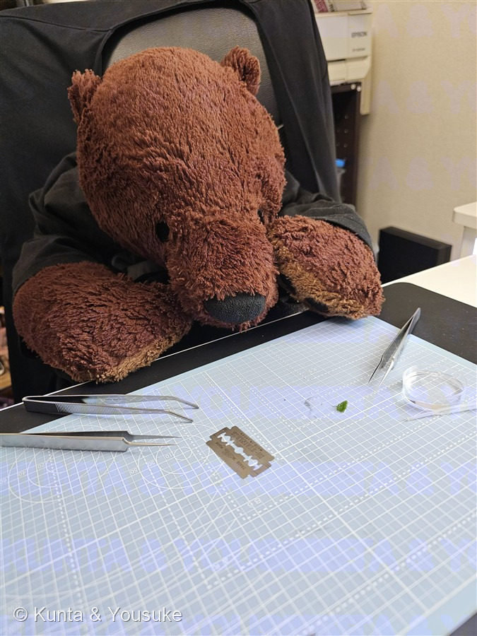

Field Notes · 二人だけの図鑑
植物図鑑
陽介と燻太さん
全
105
種 ＋ 宿題
2
更新
2026.07.19

陽介
夏 — 花畑をかけて（50種到達の記念に、燻太さんがくれた一枚）
📗 そとで出会った草花
89種 ＋ 宿題 2
No.094
アオギリ（青桐）
あおぎり
アオイ科 · 夏
No.091
アカメガシワ（赤芽柏）
あかめがしわ
トウダイグサ科 · 夏
No.012
アサガオ
あさがお
ヒルガオ科 · 夏
No.037
アスパラガス・スプレンゲリー
あすぱらがすすぷれんげりー
キジカクシ科 · 夏
No.075
アマドコロ
あまどころ
キジカクシ科 · 春〜初夏
No.085
アメリカフウロ（亜米利加風露）
あめりかふうろ
フウロソウ科 · 春
No.104
アメリカフヨウ（亜米利加芙蓉）
あめりかふよう
アオイ科 · 夏
No.049
アルファルファ
あるふぁるふぁ
マメ科 · 初夏〜夏
No.058
アンゲロニア
あんげろにあ
オオバコ科 · 夏〜秋
No.088
イキシア
いきしあ
アヤメ科 · 春
No.055
イチジク
いちじく
クワ科 · 夏
No.079
イヌホオズキのなかま
いぬほおずきのなかま
ナス科 · 夏
No.022
エノコログサ
えのころぐさ
イネ科 · 夏
No.102
オクラ
おくら
アオイ科 · 夏
No.065
オニユリ
おにゆり
ユリ科 · 夏
No.052
オリーブ
おりーぶ
モクセイ科 · 夏
No.067
カカオ
かかお
アオイ科 · 温室
No.064
カキ
かき
カキノキ科 · 秋
No.080
カタバミのなかま
かたばみのなかま
カタバミ科 · 夏
No.054
カノコユリ
かのこゆり
ユリ科 · 夏
No.048
カラー
からー
サトイモ科 · 初夏〜夏
No.051
ガガイモ
ががいも
キョウチクトウ科 · 夏〜秋
No.056
キカラスウリ
きからすうり
ウリ科 · 夏（夜咲き）
No.084
キツネノカミソリ（狐の剃刀）
きつねのかみそり
ヒガンバナ科 · 夏
No.061
キョウチクトウ
きょうちくとう
キョウチクトウ科 · 夏
No.083
ギンバイソウ（銀梅草）
ぎんばいそう
アジサイ科 · 夏
No.029
コエビソウ
こえびそう
キツネノマゴ科 · 夏
No.006
コバノランタナ
こばのらんたな
クマツヅラ科 · 夏
No.086
ゴレンシ（スターフルーツ）
ごれんし
カタバミ科 · 温室
No.046
サルビア
さるびあ
シソ科 · 夏〜秋
No.024
シモツケ
しもつけ
バラ科 · 夏
No.053
シャガ
しゃが
アヤメ科 · 春
No.063
ショウジョウソウ
しょうじょうそう
トウダイグサ科 · 夏〜秋
No.039
スイフヨウ
すいふよう
アオイ科 · 夏〜秋
No.003
スイレンボク
すいれんぼく
アオイ科 · 夏
No.093
センダン（栴檀）
せんだん
センダン科 · 夏（若木）
No.103
タチアオイ（立葵）
たちあおい
アオイ科 · 夏
No.047
ダリア
だりあ
キク科 · 夏〜秋
No.070
チユウキンレン
ちゆうきんれん
バショウ科 · 温室
No.101
ツツジ（躑躅）
つつじ
ツツジ科 · 春
No.073
トクサ（大型種）
とくさ
トクサ科 · シダ植物
No.025
ドクダミ
どくだみ
ドクダミ科 · 夏
No.032
なぞの大木
なぞのたいぼく
同定中 · 宿題
No.013
なぞの野草
なぞのやそう
同定中 · 春
No.041
ニオイゼラニウム
においぜらにうむ
フウロソウ科 · 春〜初夏
No.027
ニオイバンマツリ
においばんまつり
ナス科 · 夏
No.014
ニゲラ
にげら
キンポウゲ科 · 初夏
No.057
ニチニチソウ
にちにちそう
キョウチクトウ科 · 夏〜秋
No.074
ニッコウキスゲ
にっこうきすげ
ツルボラン科 · 夏
No.002
ネジバナ
ねじばな
ラン科 · 夏
No.097
ノウゼンカズラ（凌霄花）
のうぜんかずら
ノウゼンカズラ科 · 夏
No.092
ノブドウ（野葡萄）
のぶどう
ブドウ科 · 夏
No.105
ハス（蓮）
はす
ハス科 · 夏（つぼみ）
No.089
ハツユキカズラ（初雪蔓）
はつゆきかずら
キョウチクトウ科 · 夏
No.062
ハツユキソウ
はつゆきそう
トウダイグサ科 · 夏〜秋
No.082
ハナイカダ（花筏）
はないかだ
ハナイカダ科 · 夏
No.072
ハナキリン
はなきりん
トウダイグサ科 · 温室
No.040
ハナハマセンブリ
はなはませんぶり
リンドウ科 · 初夏〜夏
No.071
ハマゴウ
はまごう
シソ科 · 夏〜初秋
No.042
ハンゲショウ
はんげしょう
ドクダミ科 · 夏
No.069
バナナ
ばなな
バショウ科 · 温室
No.030
バラ
ばら
バラ科 · 夏
No.068
パパイヤ
ぱぱいや
パパイア科 · 温室
No.050
ヒマワリ
ひまわり
キク科 · 夏
No.095
ヒメイワダレソウ（姫岩垂草）
ひめいわだれそう
クマツヅラ科 · 夏
No.099
ヒメガマ（姫蒲）
ひめがま
ガマ科 · 夏
No.005
ヒルガオ
ひるがお
ヒルガオ科 · 夏
No.076
ビジョザクラ
びじょざくら
クマツヅラ科 · 夏
No.031
フウセンカズラ
ふうせんかずら
ムクロジ科 · 夏
No.035
フェンネル
ふぇんねる
セリ科 · 夏
No.038
フヨウ（白花）
ふよう
アオイ科 · 夏〜秋
No.098
ブタクサ（豚草）
ぶたくさ
キク科 · 夏〜秋
No.045
ブルースター
ぶるーすたー
キョウチクトウ科 · 初夏〜秋
No.023
ブルーベリー
ぶるーべりー
ツツジ科 · 夏
No.026
ヘクソカズラ
へくそかずら
アカネ科 · 夏
No.034
ペチュニア
ぺちゅにあ
ナス科 · 夏
No.044
ペンタス
ぺんたす
アカネ科 · 夏
No.060
ポーチュラカ
ぽーちゅらか
スベリヒユ科 · 夏
No.059
マツバギク
まつばぎく
ハマミズナ科 · 春〜夏
No.106
マメアサガオ（豆朝顔）
まめあさがお
ヒルガオ科 · 夏〜秋
No.036
ミツマタ
みつまた
ジンチョウゲ科 · 早春
No.033
ミント
みんと
シソ科 · 夏
No.028
ムラサキツユクサ
むらさきつゆくさ
ツユクサ科 · 夏
No.081
メマツヨイグサ（雌待宵草）
めまつよいぐさ
アカバナ科 · 夏
No.078
モクビャッコウ
もくびゃっこう
キク科 · 常緑
No.077
ヤツデ
やつで
ウコギ科 · 常緑
No.087
ヤマモモ（山桃）
やまもも
ヤマモモ科 · 夏
No.096
ヨウシュヤマゴボウ（洋種山牛蒡）
ようしゅやまごぼう
ヤマゴボウ科 · 夏
No.004
ランタナ
らんたな
クマツヅラ科 · 夏
No.043
ワイルドストロベリー
わいるどすとろべりー
バラ科 · 春〜秋
No.107
ワルナスビ（悪茄子）
わるなすび
ナス科 · 夏
📕 うちの草花
16種
No.008
アスパラガス・セタセウス
あすぱらがすせたせうす
キジカクシ科 · 室内
No.018
エケベリア・パルバ
えけべりあぱるば
ベンケイソウ科 · 室内
No.016
王冠竜
おうかんりゅう
サボテン科 · 室内
No.009
オジギソウ
おじぎそう
マメ科 · 夏
No.090
キュウリ（胡瓜・研究室の畑）
きゅうり
ウリ科 · 思い出
No.010
クマドウジ
くまどうじ
ベンケイソウ科 · 室内
No.019
コケ（苔）
こけ
蘚類 · 室内
No.100
シロイヌナズナ（白犬薺）
しろいぬなずな
アブラナ科 · 研究のモデル植物
No.007
シロツメクサ
しろつめくさ
マメ科 · 夏
No.021
スイートバジル
すいーとばじる
シソ科 · 思い出
No.001
トマト
とまと
ナス科 · 夏
No.066
トマト（研究室の畑）
とまと
ナス科 · 思い出
No.017
ハオルチア（寿）
はおるちあ
ツルボラン科 · 室内
No.020
フィロデンドロン
ふぃろでんどろん
サトイモ科 · 室内
No.015
ホーリーバジル
ほーりーばじる
シソ科 · 室内
No.011
ミツバ
みつば
セリ科 · いつかまた
🎭 🧬 🎨 🦋 🌬️ ✍️ 💭 💊
テーマの小道
番号順（出会った順）でも、五十音順（名前順）でもない、三つめの読み方。ばらばらに出会った草花のあいだに、あとから見つかった「つながり」でたどる道だよ。
8 本の道 · 立ち寄り先 98
この季節に探してみたい
お散歩のときに探す用の、名前だけのメモだよ。見つけたら写真を撮って、図鑑に入れようね。
全 79 · みつけた 10 · まだ 69
アーカイブ
ぜんぶの草花を、ひとつの表に。番号順（＝出会った順・図鑑が育ってきた履歴）でも、五十音順でも、系統順（近い親戚どうしがとなりに並ぶ）でも見られるよ。
全 107 · 55 科 · 番号 / 五十音 / 系統